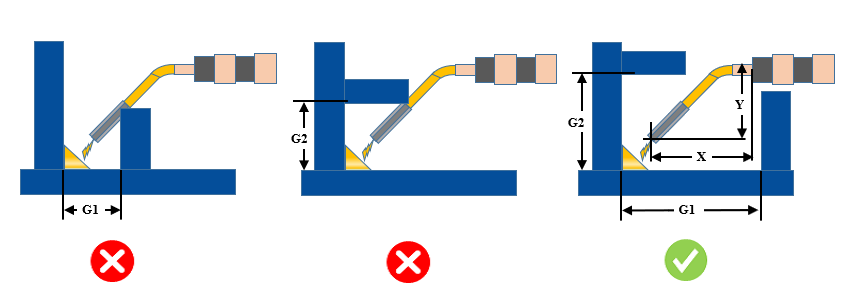

効果的な溶接を行うためには、周囲コンポーネントの間隔および高さを、電極のサイズと種類に基づいて設計する必要があります。そうしない場合、溶接ガンのアクセス性に関する問題につながります。
板同士の適切なクリアランスは、高品質な溶接を確保します。溶接継手周辺のクリアランスが不十分な場合、溶接品質と作業効率に影響を与え、コスト増加やスケジュール遅延につながる可能性があります。
障害物があると、母材（ベースメタル）の板と溶接金属との間で不適切な融合（溶け込み）が発生し、強度が低下する可能性があります。溶接近傍の領域は障害物がなく、溶接機器の取り回しおよび溶接作業者のアクセスに十分なスペースが確保されている必要があります。
十分な溶接ガンクリアランスを確保するために、板間の隙間を広げるか、または2枚目の板の高さを低くしてください。
ユーザーは入力として、溶接トーチ長さ（X）および高さ（Y）のデフォルト値を構成できます。トーチの入力パラメータに基づき、ユーザーは水平クリアランスギャップ（G1）および垂直クリアランスギャップ（G2）を構成できます。
板から板へのすべての交差シームについて溶接が存在するものと仮定し、解析対象として考慮されます（板厚は除外されます）。
解析は溶接アセンブリに対して実行されます。これは、すべてのファスナーがDFMProハードウェアデータベースに追加されていることを条件として、（ファスナーを除く）すべてのパーツが溶接コンポーネントとして扱われることを意味します。
すみ肉溶接の幅（Width）と長さ（Length）は同一であると仮定します。
ルール構成ダイアログボックスで指定された板厚範囲に対して、DFMProはルール検証のために利用可能な最小の板厚を考慮します。
DFMProは、板厚が一定であり、変動しないものと仮定します。

ここで、
G1 = 2枚の板間の水平クリアランス
G2 = 2枚の板間の垂直クリアランス
X = 溶接トーチ長さ
Y = 溶接トーチ高さ